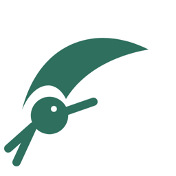

Política de privacidad
Última actualización: noviembre de 2026. Borrador sujeto a revisión legal.
1. Qué datos recogemos
Nombre, correo, teléfono (opcional), foto de perfil, ubicación aproximada cuando tú lo permites, y tu actividad en la app: filas, favoritos, reseñas, citas y reportes. Los profesionales además publican categoría, dirección, horario, servicios y fotos de trabajos.
2. Para qué los usamos
Para mostrarte quién está disponible cerca, gestionar tu turno en la fila y tus citas, avisarte cuando un profesional está libre y mantener la seguridad de la comunidad. No vendemos tus datos.
3. Qué ven los demás
Los clientes ven el nombre, foto, categoría, estado, dirección y servicios del profesional. El teléfono del profesional es visible para los clientes para que puedan contactarlo. Tu ubicación exacta nunca se publica; solo se usa en tu teléfono para calcular distancias.
4. Uso con Alexa y otros asistentes de voz
Si conectas Zum Zum con Alexa, guardamos el identificador que Amazon asigna a tu cuenta de Alexa, vinculado a tu cuenta de Zum Zum, solo para reconocerte cuando pides algo por voz (ponerte en una fila, consultar tu turno o reservar una cita). No recibimos ni guardamos grabaciones de tu voz; Amazon nos envía únicamente el texto de lo que pides. Puedes desvincular Alexa en cualquier momento desde Perfil → Conectar con Alexa, y eso borra el identificador.
5. Tus derechos (Ley 172-13)
Puedes acceder, corregir y eliminar tus datos. Desde Mi cuenta → Eliminar mi cuenta borras tu perfil y todo lo asociado de forma permanente.
6. Seguridad y conservación
Los datos se guardan cifrados en servidores de Supabase. Conservamos tu información mientras tengas cuenta; al eliminarla se borra de nuestros sistemas.
7. Contacto
Para consultas de privacidad escribe a atletero@gmail.com.